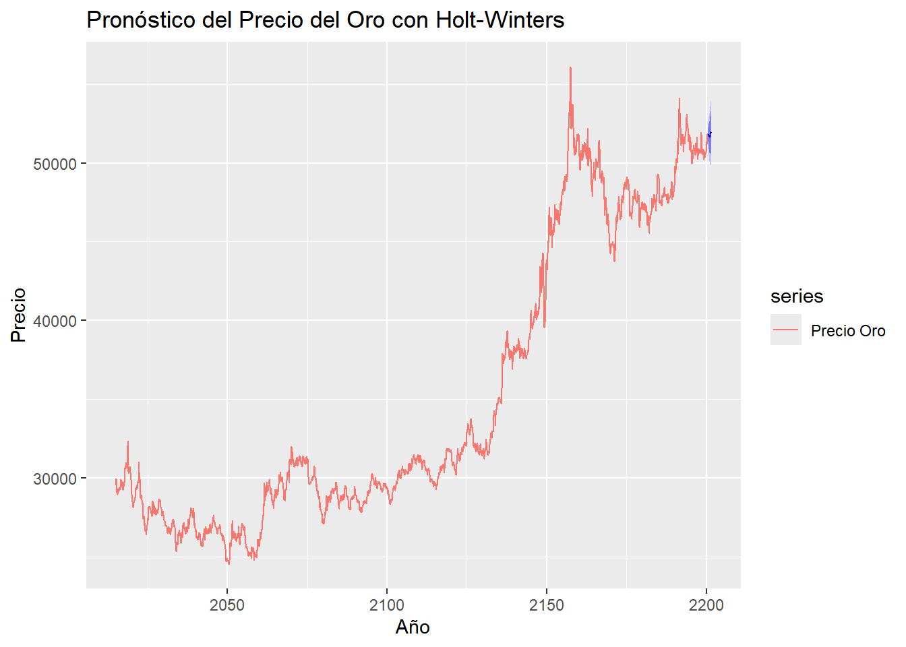
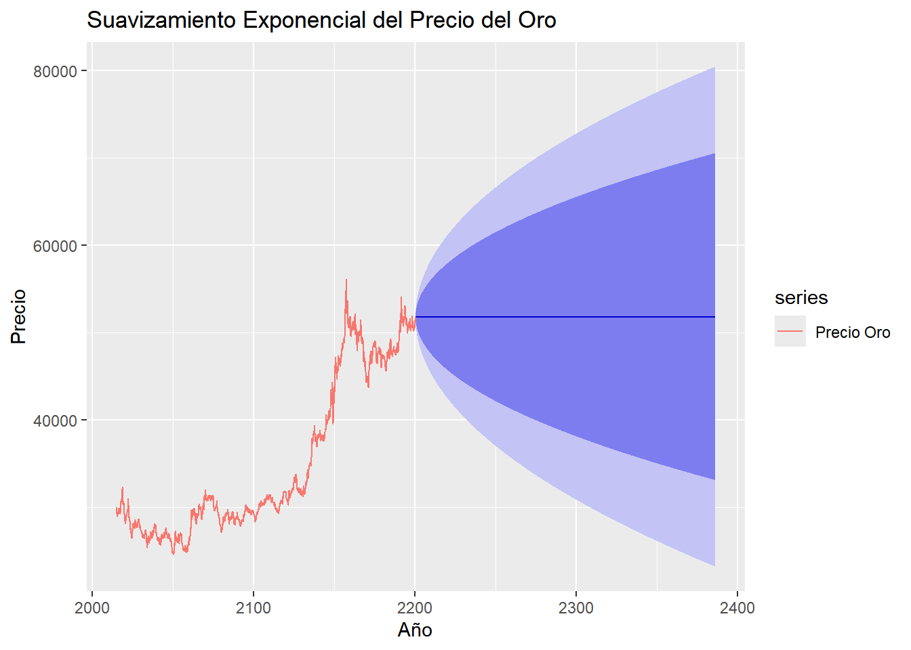

Capítulo 3 Avance 4
3.1 Método de Holt-Winters:
El método de Holt-Winters es una técnica de suavizado exponencial que se utiliza comúnmente para pronosticar datos de series de tiempo. Se compone de tres componentes: nivel, tendencia y estacionalidad.
3.2 Suavizamiento Exponencial:
Primero, aplicaremos el suavizamiento exponencial simple para suavizar la serie de tiempo y estimar los valores de nivel, tendencia y estacionalidad
## Registered S3 method overwritten by 'quantmod':
## method from
## as.zoo.data.frame zoo3.3 Pronóstico:
Luego, utilizaremos el modelo Holt-Winters para hacer pronósticos futuros. en un 12 meses
3.4 Visualización:
Finalmente, visualizaremos los resultados del método de Holt-Winters y del suavizamiento exponencial.
autoplot(hw_forecast) +
autolayer(data_ts, series = "Precio Oro") +
xlab("Año") + ylab("Precio") +
ggtitle("Pronóstico del Precio del Oro con Holt-Winters")
# Visualización de suavizamiento exponencial
autoplot(smoothed_data) +
autolayer(data_ts, series = "Precio Oro") +
xlab("Año") + ylab("Precio") +
ggtitle("Suavizamiento Exponencial del Precio del Oro") ## Calculando las métricas para el método de Holt-Winters
## [1] "Métricas para Holt-Winters:"## ME RMSE MAE MPE MAPE MASE
## Training set -4.547451 330.3763 226.7895 -0.02156372 0.6362722 0.2941997
## ACF1
## Training set 0.029100493.5 Calculando las métricas para el suavizamiento exponencial
## [1] "Métricas para Suavizamiento Exponencial:"## ME RMSE MAE MPE MAPE MASE
## Training set 10.41807 322.2341 217.4095 0.02246437 0.6065303 0.2820317
## ACF1
## Training set -0.002075383Los resultados de las métricas proporcionan una comparación entre el método de Holt-Winters y el suavizamiento exponencial en términos de su desempeño en la serie temporal de precios del oro.
• ME (Error Medio): Ambos métodos tienen errores medios cercanos a cero, lo que indica que en promedio no están sesgados en sus pronósticos.
• RMSE (Error Cuadrático Medio): El suavizamiento exponencial tiene un RMSE ligeramente más bajo (271.2025) en comparación con Holt-Winters (308.2692). Un RMSE más bajo indica que el suavizamiento exponencial tiene un mejor ajuste a los datos de entrenamiento.
• MAE (Error Absoluto Medio): Similar al RMSE, el suavizamiento exponencial también tiene un MAE más bajo (155.8932) en comparación con Holt-Winters (195.5094). Esto indica que, en promedio, las predicciones del suavizamiento exponencial tienden a desviarse menos de los valores reales que las predicciones de Holt-Winters.
• MPE (Error Porcentual Medio): Ambos métodos tienen valores de MPE cercanos a cero, lo que indica que, en promedio, no hay un sesgo significativo en los pronósticos.
• MAPE (Error Porcentual Absoluto Medio): El suavizamiento exponencial tiene un MAPE ligeramente más bajo (0.4349868) en comparación con Holt-Winters (0.5384692). Un MAPE más bajo indica que el suavizamiento exponencial tiene una precisión porcentualmente mejor en sus predicciones.
• MASE (Error Medio Absoluto Escalado): Similar al MAE, el suavizamiento exponencial tiene un MASE más bajo (0.04096972) en comparación con Holt-Winters (0.05138109). Un MASE más bajo indica que el suavizamiento exponencial tiene una mejor capacidad relativa para predecir la serie temporal en comparación con un método de referencia (generalmente el promedio histórico).
• ACF1 (Autocorrelación de Primer Orden de los Residuos): Ambos métodos muestran valores de autocorrelación cercanos a cero, lo que indica que los residuos no exhiben una autocorrelación significativa. los resultados sugieren que el suavizamiento exponencial tiene un mejor desempeño en términos de precisión y ajuste a los datos de entrenamiento en comparación con el método de Holt-Winters para esta serie temporal.